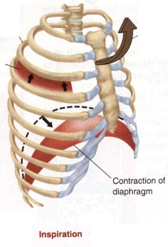
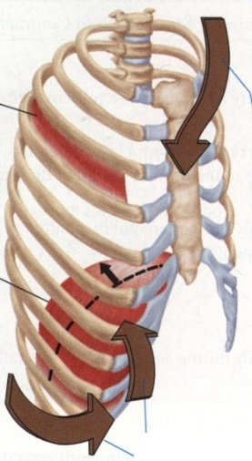
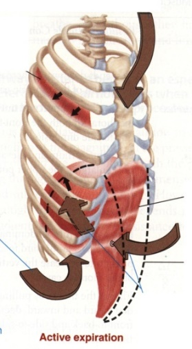
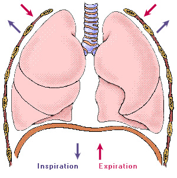
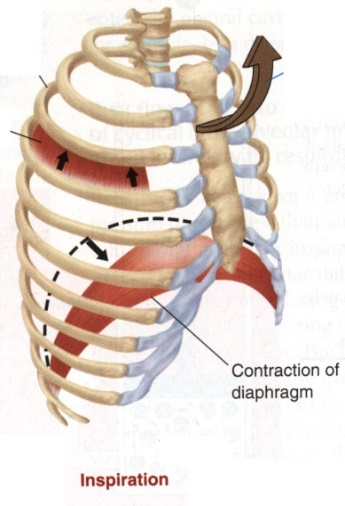
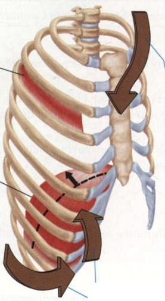
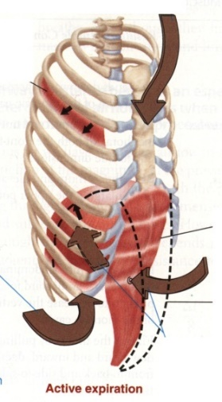
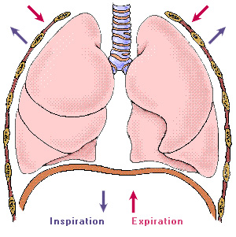

- Respiratory Muscles and Expiration
- Quiet expiration – passive process, relaxation of inspiratory muscles.
- Forced expiration – active process assisted by the abdominal muscles.
- Before Inspiration
- Inspiration
- Quiet Expiration
- Forced Expiration
 
